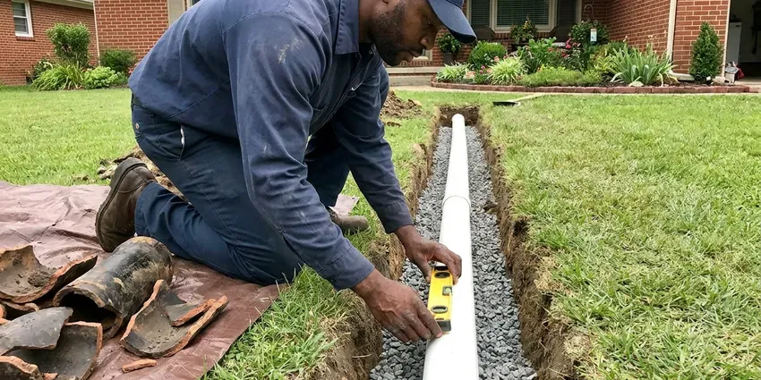

Tankless Water Heater Replacement in Elgin, IL
HVM Plumbing provides professional tankless water heater replacement services across Elgin, IL, making sure your home has efficient hot water.
- Same-Day Replacement Available
- Transparent Pricing
- Isolation Valves Installed Standard
- Prompt Tankless Replacement

Expert Tankless Water Heater Replacement in Elgin, IL.
Call HVM Plumbing today for a free estimate on your tankless water heater replacement.
Reliable Tankless Water Heater Replacement Services in Elgin, IL
HVM Plumbing handles every part of a tankless swap, including removing the old unit, upgrading the gas line if needed, installing new concentric or PVC venting and adding service valves for annual flushing. You get a clean, code-compliant install and a walkthrough of how to keep the heat exchanger in good shape.
Our expertise includes:
- Clean integration with existing plumbing and gas lines.
- Condensing unit installs with PVC venting and condensate neutralizers
- Correct venting and condensate drainage system setup.

Additional Plumbing Replacement Services in Elgin, IL
When repairs are no longer enough, our replacement services in Elgin, IL deliver modern, efficient equipment installed right.




Elgin sewer replacement specialists

Customers
Why Choose HVM Plumbing for Tankless Water Heater Replacement in Elgin, IL?
We understand the plumbing challenges homes face in Illinois and are ready to handle any complexities involved in swapping your old tankless unit for a new, reliable one.
- Increased Lifespan, Modern tankless water heaters often last much longer than conventional tank models, offering a better long-term investment.
- Clean Venting, We route venting to meet manufacturer clearances from windows, doors and roof edges.
- Energy Savings, Tankless water heaters only heat water when you need it, which can significantly reduce energy use compared to traditional tank models, a big plus for Illinois utility bills.
Citywide Coverage
Whether your tankless sits on an exterior wall, in a garage or inside a utility closet, we cover all of Elgin with the same scheduling and pricing. Most replacements are booked within a day or two.
Experienced Team
Each technician at HVM Plumbing knows tankless technology, so your replacement is done accurately and efficiently. We focus on details like proper gas line sizing, venting and electrical connections for optimal performance and safety.
Safety-First Approach
Safety and code compliance are paramount in every tankless water heater replacement we perform. Our installations follow all Illinois and local Elgin plumbing and gas codes, so your system runs safely and efficiently.
Trusted Certified Elgin Plumbing Services Professionals
At HVM Plumbing, we take pride in providing certified plumbing services throughout Elgin, IL. Backed by recognized industry credentials, our experienced plumbers combine technical skill with genuine customer care. Whether it is repair, installation, or maintenance, we follow strict safety and quality standards to deliver long-lasting results you can trust.
Call Us Now PHCC Plumbing Contractor Recognition
PHCC Plumbing Contractor Recognition Better Business Bureau (BBB) Accreditation
Better Business Bureau (BBB) Accreditation Angi Certified Pro
Angi Certified Pro ISO 9001 Quality Management Certification
ISO 9001 Quality Management CertificationReliable Tankless Water Heater Replacement Services in Elgin, IL
Commercial Tankless Replacement in Elgin
Restaurants, salons and small offices often use multiple tankless units linked together on a rack system. When one or more units fail, we replace them and rebalance the cascade controls so they share the load. We check gas pressure under full demand, since commercial racks can draw more than 600,000 BTU combined. Scheduling is easy to work around, so we can work after hours and keep your business open. We also set up a descaling schedule matched to your water usage.

Like-for-Like Tankless Swaps in Elgin
When your existing tankless has a cracked heat exchanger or a failed control board that is not worth repairing, a direct replacement is often the quickest fix. We match the new unit to your current gas line, venting type and mounting location whenever possible. Many Rinnai and Navien models share similar footprints, which keeps wall patching to a minimum. We also replace the old service valves if they are corroded or stuck. Most like-for-like swaps are finished in four to six hours.
Commercial Tankless Water Heater Replacement in Elgin, IL
Businesses in Elgin, IL often require robust hot water solutions, and tankless systems can provide the efficiency and capacity needed. We regularly replace commercial tankless units for restaurants, offices and other facilities with minimal disruption to your operations. Our plumbers are skilled with high-capacity models and complex plumbing layouts. We deliver a steady hot water supply that meets your business's demands and health code requirements.
Gas Tankless Water Heater Replacement in Elgin
Many homes in Elgin rely on natural gas for water heating, and gas tankless units are a highly efficient option. Our gas tankless water heater replacement service includes thorough inspection of your existing gas lines, proper sizing of new gas lines if needed, and secure venting to the outdoors. We put a priority on safety. All gas connections and combustion air requirements meet Illinois and local codes, preventing potential hazards and maximizing efficiency.
Tankless vs. Tank Water Heater Conversion in Elgin, IL
Considering converting from a traditional tank water heater to a tankless system in your Elgin, IL home? This is a common and worthwhile upgrade, but it requires specialized expertise. We handle the entire conversion, which can involve rerouting gas lines, upgrading electrical service, modifying water lines and installing new venting. Our team makes for a smooth transition, so you can enjoy the long-term benefits of a modern, efficient tankless system.
Tank to Tankless Conversions in Elgin, IL
Converting from a 40 or 50 gallon tank to tankless frees up floor space and ends standby heat loss in a garage or closet. The catch is that tankless units usually need a larger gas line, often three quarter inch or bigger, plus new venting. We evaluate your meter size and pipe run before quoting so there are no surprises mid-job. We also cap or reroute the old flue and seal the roof penetration if it is no longer used. Expect a conversion to take a full day.
Navien Tankless Water Heater Replacement in Elgin, IL
Navien tankless water heaters are popular for their condensing technology, delivering high efficiency and performance. When it is time for a Navien tankless water heater replacement in Elgin, IL, you can count on HVM Plumbing. We have broad experience with Navien's advanced systems, including their combination boiler and water heater units. Our installation process focuses on dialing in your new Navien's performance, so you benefit from its energy-saving features and reliable hot water output.

Exterior Mount Tankless Units in Elgin, IL
Many homes have tankless heaters mounted on an exterior wall with no venting at all, since the unit exhausts directly outside. These units face sun, rain and temperature swings, which can wear out plastic covers and wiring over time. Water and sewer lines must be buried deep enough to avoid freezing, and shallow lines are a common source of winter trouble. When we replace them, we check the pipe cover, freeze protection settings and the electrical connection. We can add a protective pipe cover kit to guard the water and gas lines. Exterior models are often the simplest swap when the gas line is already sized correctly.
Tankless Water Heater Replacement Near Me in Elgin, IL
Looking for tankless water heater replacement near me in Elgin, IL? HVM Plumbing is your local pro, providing prompt and professional service across the entire area. Our team is located to respond quickly to your hot water needs, with efficient service right to your doorstep.
If you are searching for tankless water heater replacement near me in Elgin, IL, HVM Plumbing is your local expert. Our service area covers the whole region, so a professional plumber is always close by when you need a new, efficient hot water solution. We are known for quick response times and reliable service for all tankless installations.
HVM Plumbing at a Glance
- Fully licensed plumbing team covering Elgin, IL
- Same-day appointments and 24/7 emergency response
- Upfront, flat-rate pricing before work begins
- 4.8-star rated by 528+ Illinois customers
Elgin Map
Elgin Information
- Population
- 113,310
- Area codes
- 847/224/630
- Service area
- Elgin and communities within 40 miles
- Nearby
- Hoffman Estates, Schaumburg, Palatine, Wheaton
Replacing an old tankless water heater in Elgin, IL is essential for a reliable hot water supply, especially with shifting seasonal demands and mineral content that can cut into unit efficiency and lifespan.
Expert Services
Trust our professionals for reliable HVM Plumbing solutions in Elgin, IL.
Our Specialized Plumbing Services in Elgin, IL
At HVM Plumbing, we provide a complete range of plumbing services across Elgin, IL. From leak detection to full system installations, our team ensures fast, precise, and affordable service for both residential and commercial properties. Explore our core services below:


How Our Tankless Water Heater Replacement Process Works in Elgin, IL
We keep the process easy to follow from the first call to the final combustion test.
Request a Quote
Call (773) 903-7643 with your current model number and a photo of the install. We give you a rough price and schedule a visit.
Size and Inspect
Our tech measures gas line size, meter capacity, venting path and water hardness. We recommend a unit that matches your hot water demand.
Install and Test
We remove the old heater, install the new one with service valves and venting, then test gas pressure and combustion. You get a walkthrough on settings and flushing.
Frequently Asked Questions About Tankless Water Heater Replacement in Elgin
The cost of tankless water heater replacement in Elgin, IL usually ranges from $3,000 to $6,000, depending on the unit's capacity, brand, complexity of installation, such as converting from a tank model, and any necessary electrical or gas line upgrades. This price usually includes the unit itself and labor. We provide a written, upfront quote after a thorough assessment of your home.
New tankless water heaters usually come with a manufacturer's warranty, which usually covers the heat exchanger for 10 to 15 years and parts for 3 to 5 years. HVM Plumbing also provides a labor warranty on our installation work for your peace of mind. We will go over warranty details for your chosen unit during your consultation.
Frequent error codes, fluctuating temperature, water leaking from inside the cabinet and a unit older than 15 years are common signs. If the heat exchanger is leaking, replacement is usually the better value.
Most jurisdictions in Illinois require a permit for water heater replacement, especially when gas piping or venting changes. We handle permits where they are required.
Yes, you can certainly replace a traditional tank water heater with a tankless unit. This is a common upgrade for homeowners seeking better energy efficiency and endless hot water. However, it often requires changes to gas lines, venting and possibly electrical wiring, making professional installation essential for safety and performance.
A standard tankless water heater replacement usually takes between 4 and 8 hours. This timeframe can vary based on whether we are replacing an existing tankless unit with a similar model or upgrading from a traditional tank water heater. A tank conversion may require more extensive changes to gas lines, electrical or venting.
Often yes, especially when converting from a tank. Many tankless units need three quarter inch gas pipe and a meter that can handle 199,000 BTU on top of your furnace, range and dryer.
A standard tankless water heater replacement, if you are upgrading from an existing tankless unit, typically takes 4 to 8 hours. If you are converting from a traditional tank water heater, the process can take longer, possibly a full day, due to additional plumbing, gas or electrical changes required for proper installation and venting.
What People Are Saying About Our Plumbing Experts?

Robert G.
The trenchless sewer replacement saved our front yard. They walked us through the camera inspection footage first so we knew exactly what we were paying for.
Sewer Line Replacement · Schaumburg, IL
Daniel K.
A pipe burst at 11 pm and they actually answered. The plumber showed up within the hour, shut everything down, and had us back to normal the next morning. Could not ask for more.
Emergency Plumbing · Aurora, IL
Laura S.
I scheduled a water heater replacement, and the team made the process smooth and affordable. The new unit works perfectly, and they cleaned up after completing the job.
Water Heater Replacement · Arlington Heights, ILJames P.
Our commercial plumbing system had a leak under the sink, and HVM Plumbing handled it professionally. The plumbers arrived quickly and restored everything without disruption to our customers.
Commercial Plumbing · Wheaton, IL
Emily R.
I called HVM Plumbing for plumbing repair, and the technician was fast, polite, and thorough. They explained the problem clearly and fixed it the same day. I will definitely hire them again. Highly recommended!
Plumbing Repair · Palatine, ILSofia M.
Two new toilets installed in one visit, no mess left behind, and the tech even adjusted a faucet he noticed was dripping. Fair pricing and really friendly.
Toilet Installation · Hoffman Estates, IL